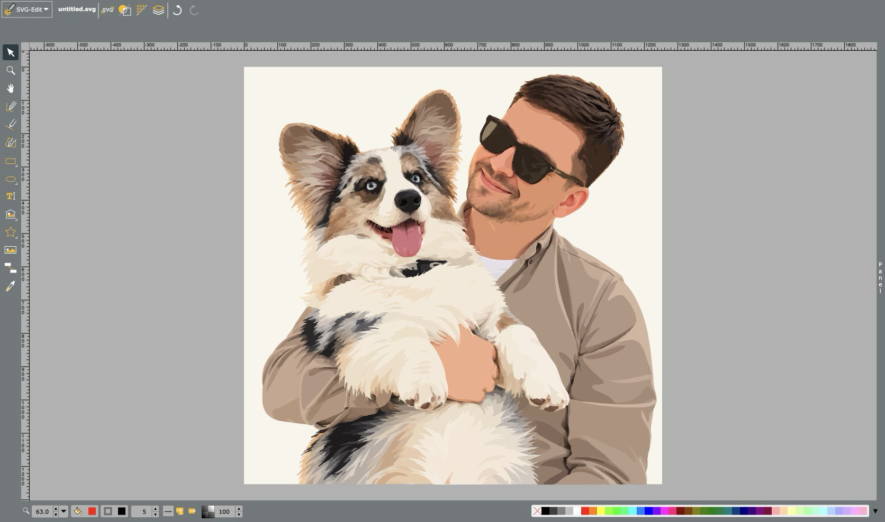

Святослав Подмогаев
Ускоряем интерфейс с кодинг-агентом
Обо мне
Святослав Подмогаев
Indie developer
15 лет во фронтенде

План доклада
- Как устроен автономный цикл
- Эксперимент на SVGEdit
- Результаты и ограничения
- Где ещё применим подход
Передаём перебор гипотез агенту
Разработчик задаёт
Цель, сценарии проверки и ограничения
Агент повторяет
Анализ кода, гипотеза, изменение
Автоматические
проверки
Тесты и замеры определяют,
принять или отклонить изменение
Автономный цикл
Проведём эксперимент: SVGEdit

Сценарии эксперимента
| Сценарий | Что выполняем |
|---|---|
| select-500 | Выделить 500 фигур |
| move-500 | Переместить 500 фигур |
| duplicate-500 | Дублировать 500 фигур со сдвигом |
| group-500 | Сгруппировать 500 фигур |
| ungroup-500 | Разгруппировать 500 фигур |
| align-left-500 | Выровнять 500 фигур по левому краю |
| fill-500 | Изменить заливку 500 фигур |
| delete-500 | Удалить 500 фигур |
| undo-move-500 | Отменить перемещение 500 фигур |
| redo-move-500 | Повторить перемещение 500 фигур |
Условия измерения
Нагрузка
10 сценариев, по 500 фигур
Повторы
100 замеров каждого сценария · 5 воркеров
Среда
Chromium · новый контекст без прогрева
Шаг таймера: 5 мкс · cross-origin isolation
Что измеряем
Синхронный вызов команды и её обработчиков
Порог принятия
Снижение целевой функции на ≥ 1% от ориентира
Бюджет поиска
20 итераций · до 4 часов на период
Как принимаем решение
Ориентир — последний принятый вариант, до первого улучшения — baseline
Итерация успешна: значение целевой функции снизилось относительно ориентира на ≥ 1%, проверки пройдены, ограничения соблюдены
Иначе — отклонить и сохранить прежний ориентир
Как считаем целевую функцию
Медиана сценария
100 времён по возрастанию
mi =ti,50 + ti,512
Отношение к baseline
Исходный baseline фиксирован
ri =mi новой версииmi baseline
Среднее отношений
Все сценарии равны по весу
C=r1 + r2 + … + r1010
Принятая гипотеза: чтение геометрии
iteration-001
Сначала прочитать геометрию фигур,
затем создавать рамки выделения
Принятая гипотеза: изменение
iteration-001 · packages/svgcanvas/core/selection.js
+ const bboxes = new Map()
+ for (let i = elemsToAdd.length - 1; i >= 0; i--) {
⋮
+ bboxes.set(elem, getBBox(elem))
⋮
+ }
⋮
- const sel = svgCanvas.selectorManager.requestSelector(elem)
+ const sel = svgCanvas.selectorManager.requestSelector(elem, bboxes.get(elem))Замер и approve
iteration-001
Ориентир: baseline
Было
1,0000
Стало
0,8270
−17,30%
Снижение целевой функции
Принято
Порог: 1%
| Сценарий | Baseline, мкс | 001, мкс | Изменение |
|---|---|---|---|
| select-500 | 37 717 | 16 173 | -57,1% |
| move-500 | 49 867 | 43 507 | -12,8% |
| duplicate-500 | 89 878 | 75 215 | -16,3% |
| group-500 | 4 623 | 4 015 | -13,1% |
| ungroup-500 | 26 545 | 11 767 | -55,7% |
| align-left-500 | 49 260 | 45 293 | -8,1% |
| fill-500 | 1 182 | 1 135 | -4,0% |
| delete-500 | 2 215 | 2 152 | -2,8% |
| undo-move-500 | 222 915 | 217 402 | -2,5% |
| redo-move-500 | 211 735 | 210 442 | -0,6% |
Отклонённая гипотеза: CSS-класс
iteration-013
Не добавлять CSS-класс disabled,
если он уже есть
Отклонённая гипотеза: изменение
iteration-013 · src/editor/dialogs/cmenuDialog.js
- selEle.parentElement.classList.add('disabled')
+ const classes = selEle.parentElement.classList
+ if (!classes.contains('disabled')) {
+ classes.add('disabled')
+ }Та же проверка добавлена перед удалением класса
Замер и reject
iteration-013
Ориентир: iteration-011
Было
0,5199
Стало
0,5235
+0,69%
Рост целевой функции
Отклонено
Порог: 1%
| Сценарий | 011, мкс | 013, мкс | Изменение |
|---|---|---|---|
| select-500 | 10 290 | 10 360 | +0,7% |
| move-500 | 18 515 | 18 990 | +2,6% |
| duplicate-500 | 37 228 | 37 788 | +1,5% |
| group-500 | 4 060 | 4 230 | +4,2% |
| ungroup-500 | 6 010 | 6 193 | +3,0% |
| align-left-500 | 18 845 | 19 053 | +1,1% |
| fill-500 | 1 145 | 1 140 | -0,4% |
| delete-500 | 2 092 | 2 055 | -1,8% |
| undo-move-500 | 78 400 | 77 513 | -1,1% |
| redo-move-500 | 82 395 | 81 467 | -1,1% |
Как накапливаются изменения
20 итераций · 13 приняты · 7 отклонены
Каждая попытка начинается с последней принятой версии кода
Результаты: весь прогон
−55,6%
Снижение целевой функции
1 ч 31 мин
Время выполнения
+150 −81
Строк кода
Результаты: по сценариям
| Сценарий | Baseline, мкс | iteration-018, мкс | Изменение |
|---|---|---|---|
| select-500 | 37 717 | 8 568 | -77,3% |
| move-500 | 49 867 | 16 435 | -67,0% |
| duplicate-500 | 89 878 | 33 733 | -62,5% |
| group-500 | 4 623 | 3 855 | -16,6% |
| ungroup-500 | 26 545 | 4 242 | -84,0% |
| align-left-500 | 49 260 | 16 360 | -66,8% |
| fill-500 | 1 182 | 877 | -25,8% |
| delete-500 | 2 215 | 1 590 | -28,2% |
| undo-move-500 | 222 915 | 75 510 | -66,1% |
| redo-move-500 | 211 735 | 80 150 | -62,1% |
Ограничения эксперимента
- Ограниченный набор сценариев
Ограничения эксперимента
- Ограниченный набор сценариев
- Равные веса сценариев
Ограничения эксперимента
- Ограниченный набор сценариев
- Равные веса сценариев
- Единственная метрика
Ограничения эксперимента
- Ограниченный набор сценариев
- Равные веса сценариев
- Единственная метрика
- Неполная гарантия совместимости
Ограничения эксперимента
- Ограниченный набор сценариев
- Равные веса сценариев
- Единственная метрика
- Неполная гарантия совместимости
- Без оценки статистической значимости
Другие примеры
Подход применим там, где результат
можно автоматически оценить
- Ускорение claude.ai — Anthropic:
агент ищет узкие места, меняет код и проверяет ускорение;
инженеры задают направление и одобряют изменения - autoresearch Андрея Карпатого:
агент меняет обучение языковой модели, запускает эксперимент
и сохраняет изменения, которые улучшили качество - AlphaEvolve — Google DeepMind:
агент предлагает алгоритмы, проверяет их автоматически и развивает лучшие варианты
- Поиск квантовых схем с LLM:
агент ищет схемы, которые правильно выполняют вычисление и требуют меньше операций и кубитов
Главный вывод
Мы можем автоматизировать не только
выполнение известного решения,
но и поиск решения, которого ещё не знаем